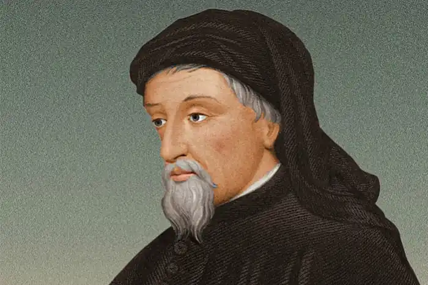
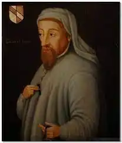

Чосер Джефрі (народження —— 1340, Лондон — смерть 25.10.1400, там само) — англійський поет.Народився у Лондоні, у купецькій родині нормандського походження. Предки Чосера імпортували в Англію іспанські та португальські вина і були навіть офіційними постачальниками королівського двору. У 1357р. Чосер ще юнаком вступив на придворну службу, отримавши посаду пажа в асистенції дружини герцога Лайонеля, третього сина короля Едварда III. У віці 19 років Чосер узяв участь у поході Едварда III проти Франції. Поблизу Реймса він потрапив у полон, але був викуплений королем. Надалі до самої смерті Чосер обіймав низку посад при королівському дворі: виконував дипломатичні доручення у Фландрії й Італії (1370—1378), стежив за діяльністю лондонської митниці, був членом парламенту від Кентського графства, королівським доглядачем будівельних робіт, королівським лісничим тощо. При цьому Чосер залишався улюбленим придворним поетом. Однак наприкінці життя Чосер потрапив у неласку за свою відданість Джонові Ґаунтському, втратив усі привілеї і помер у злиднях.
Особистість Чосера до певної міри нагадувала ренесансний тип. Поет був чудово і всебічно освіченою людиною, мав багатий життєвий досвід, цікавився як гуманітарним, так і суто утилітарним пізнанням, відзначався невичерпною енергією. Свій творчий шлях Чосер розпочав з невеликих ліричних віршів (балад, рондо, віреле тощо). Проте справжнього успіху домігся у створенні великих поем. Першим зрілим твором Чосера вважається поема "Книга герцогині" ("The Book of the Duchess", 1369).
Як і багато інших творів середньовічної словесності, "Книга герцогині" є своєрідним літературним "видінням" у формі сну. Джерелом поетичної візії стала реальна подія придворного життя — рання смерть дружини поетового покровителя, Джона Ґаунтського. Поет ідеалізував портрет леді Бланш у куртуазному дусі: герцогиня одухотворена, шляхетна, весела серцем. її образ винятково добре впливав на усіх довколишніх, а для поета він був джерелом натхнення. Чосер зізнається, що "вісім років" віддано і безнадійно кохав Бланш, підкреслюючи чистоту і піднесеність своїх почуттів. Таким чином, намагаючись розрадити вдівця, він щиро поділяє його горе. Розвиваючи у поемі тему кохання, Чосер вдається до ремінісценцій із уже перекладеного ним "Роману про Троянду". Однак навіть у цьому, елегійному за характером, творі Чосера збагачує куртуазну традицію гумористичним елементом — окремі дослідники творчості поета (М'юзкебін, Робертсон, Гарднер та ін.) навіть вважають за доречне вести мову про своєрідний "елегійний гумор" оповідача. Прикметною рисою поеми є також авторська самоіронія: поет змальовує себе людиною, якій страшенно не щастить у коханні, він нерідко потрапляє у кумедні ситуації. Можна сказати, що вже у "Книзі герцогині" починає простежуватися тенденція до синтезу французької куртуазної і міської комічної традицій. Утім, впадає в око і певна самобутність поета в межах куртуазної "норми": зокрема, привертає увагу заміна ситуації адюльтеру ідеєю законного одруження та кохання у шлюбі. Чорний рицар саме тому і не знаходить розради, бо він був по-справжньому щасливий у шлюбі. На думку Чосера, взаємне кохання, освячене шлюбом, здобуває повну свободу розвитку і вираження. Уже в першій поемі вельми помітним є прагнення Чосера підняти будь-яку тему на рівень філософського узагальнення, не випадково його вважають одним із фундаторів філософської поезії в Англії. У "Книзі герцогині" переплітаються роздуми про життя і смерть, смерть і кохання, незборимість природних законів і рекомпенсаційні можливості пам'яті й уяви. Поема вражає тональним розмаїттям: від жартівливої іронії до епічної серйозності і високого пафосу. У цій багатотональності виявилася нова психологічна орієнтація мистецтва, яке намагалося передати динамічність і суперечливість душевного стану персонажів. Можна сказати, що кожен новий твір Чосера перетворюється на художній і філософський пошук, який часто здійснюється як зважування альтернатив. Зокрема, Чосер застосовує цей прийом у "Домі слави" ("The House of Fame"), де можна зауважити відлуння диспуту між "реалістами" і "номіналістами", у якому порушувалися питання значної філософської і практичної ваги. "Реалісти" виступали прибічниками пріоритету "загальних ідей". Що ж до "номіналістів", то їх передусім цікавили "одиничності", конкретні речі у своєму матеріальному втіленні, так само, як і проблема їхнього сприйняття й оцінки, що здійснюються шляхом спостереження та експерименту. Стосовно ж найвищих божественних істин, то, визнаючи їхній абсолютний характер, "номіналісти" відмовлялися підходити до них з критеріями розуму. У своїй поемі Чосер показав антитезу "авторитету" і "досвіду", відстоюючи ідею єдності живого життя. Визнаючи доцільність авторитету і досвіду, він підкреслює їхні взаємозалежність і взаємодію. Щоправда, поета все-таки більше цікавить "досвід", живе життя. З гумором передає він муки філософа, котрий утішається "страшною радістю" пізнання, але неминуче змушений замислюватися над новими таємницями і загадками, страждаючи від усвідомлення швидкоплинності екзистенції, яка сама по собі обмежує пізнання. А проте життя залишається принадним завдяки своїй непередбачуваності, новизні та коханню. Це має для Чосера особливо вагоме значення. У дусі Боеція поет розуміє кохання як універсальний закон. Свого часу Чосер переклав "Розраду філософією" Боеція і протягом усього життя вельми цінував творчість цього мислителя, не раз звертався до його ідей у своїх творах. Наступна поема — "Пташиний парламент" ("The Parliament of Fowls", 1381-1382) свідчить про загострення інтересу Чосера до публіцистичної проблематики. Поема містить політичну алегорію: хижі птахи уособлюють собою високу аристократію, водяне птаство — купців, зерноїдні птахи — маломаєтну не титуловану аристократію, а птаство, що живиться хробаками, — міщан. Характер зображення алегоричних персонажів свідчить про те, що Чосер трохи зневажливо ставиться до палати громад, де урядують хижі птахи, влада яких стає дедалі сильнішою. Проте він вважає таку ситуацію закономірною, адже розширення політичних свобод призвело до неабиякого сум'яття. Лише зусиллями хижих птахів вдається покласти край сварці, що вибухнула у "пташиному парламенті", і особливим авторитетом користується сокіл, сильний і шляхетний птах, обраний за допомогою "відкритих виборів". Таким чином, можна сказати, що змальовуючи плоди вільнодумства, Чосер трохи побоювався їх. Треба також зазначити, що у структуру цієї політичної сатири органічно увійшла куртуазна тема: сватання трьох орлів до орлиці. Обговорення цієї ситуації учасниками пташиного парламенту породжує численні комічні ефекти і призводить до традиційної суперечки про кохання. У ній, однак, нема переможця, який би став речником панівної істини. Чосер висловлює думку про те, що кохання непідвладне упередженим міркуванням, завжди незбагненне, несподіване, парадоксальне. Власне, саме такий характер кохання Чосер зумів блискуче відтворити у поемі "Троїл і Крессіда" ("Troilus and Cressid", 1385). На початку поеми Троїл вельми скептично ставиться до кохання — воно його не цікавить. Але ці упереджені думки героя розлітаються на друзки, коли Троїла захоплює справжнє почуття. Чосерівська поема про кохання та злигодні долі, які руйнують це високе почуття, відзначається неабиякою психологічною переконливістю. Індивідуальними є характери персонажів, шляхи розвитку та форми виявлення їхніх почуттів. Крессіда, юна вдова, щиро і пристрасно закохавшись у Троїла, невдовзі доволі легко здається під ударами долі і знаходить собі нового улюбленця. Царевич Троїл, незламний у своїх почуттях, намагається компенсувати втрату кохання помстою ворогові, але це не розраджує його. У поемі також вирізняється образ Пандара, дядечка Крессіди. Цей персонаж забарвлює драматичну історію кохання комічними елементами. Досвідчений у свашкуванні жартівник, шляхетний і хитромудрий дотепник, він допомагає закоханим серцям поєднатися. Дуже прикметною є мова Пандара, щедро пересипана прислів'ями та приповідками. До певної міри цього героя можна вважати попередником майбутніх шекспірівських персонажів: Меркуціо, Фальстафа й ін. Та й узагалі чосерівська поема привернула увагу В. Шекспіра, і свого часу він запропонував власну поетичну інтерпретацію сюжету "Троїла та Крессіди". Створивши образ невірної коханої (Крессіда), у наступному творі Чосер наче намагається спростувати негативне уявлення про жіночу природу. До збірки "Легенда про добрих жінок" ("The Legend of Good Women") поет включає розповідь про міфологічних та історичних героїнь (Аріадна, Філомела, Медея, Лукреція, Клеопатра й ін.), прославляючи їх за відданість у коханні, незважаючи на зраду чи смерть їхніх чоловіків або коханих. Жертви кохання, людської пристрасті, ці героїні прирівнюються поетом до мучениць за християнську віру. "Легенда про добрих жінок", як і "Троїл та Крессіда", свідчать про плідне засвоєння Чосером античних літературних традицій, передусім досвіду Овідія ("Метаморфози", "Героїди") і Верґілія ("Ене'іда"). Очевидно, що Чосер також ґрунтовно опанував італійську традицію Відродження ("Про преславних жінок", "Філострато" Дж. Боккаччо). Завдяки збірці Чосера "Легенда про добрих жінок" англійська література отримала новий жанр — віршовану наративну новелу світського характеру. Жанр виник у результаті синтезу і трансформації принаймні двох форм: класичної легенди (передусім Овідієвої, а також почасти Боккаччо), а також легенди агіографічної (найвідомішим зразком є "Золота легенда" Я. Вораґінського). У легендах Чосер привертає увагу їхня новелістична структура: у сюжеті виразно простежуються зав'язка, кульмінація, розв'язка. Розповідь вирізняється лаконізмом викладу й ефектним зображенням вирішальних моментів дії. "Легенду про добрих жінок" можна розглядати як закономірний етап перед створенням "Кентерберійських оповідань". Уже в "Легенді" наративний елемент підпорядковується завданням зображення характеру. І все ж у цій поемі Чосер іще не досягнув справжньої різноманітності й індивідуальності персонажів. Уповні розкрити свою майстерність поетові вдалося у "Кентерберійських оповіданнях" ("The Canterbury Tales", 1387— 1400). Свою найславетнішу книгу Чосер створює на ґрунті вже випробуваного ним прийому: кшталтування нового розповідного комплексу здійснюється на основі відомих типів розповіді.